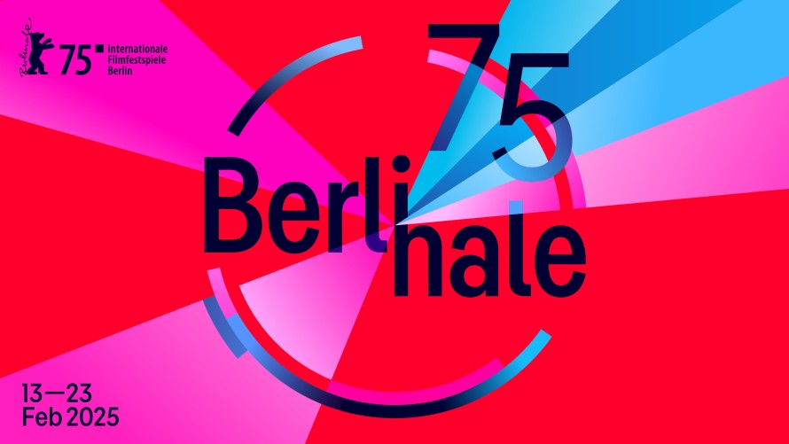
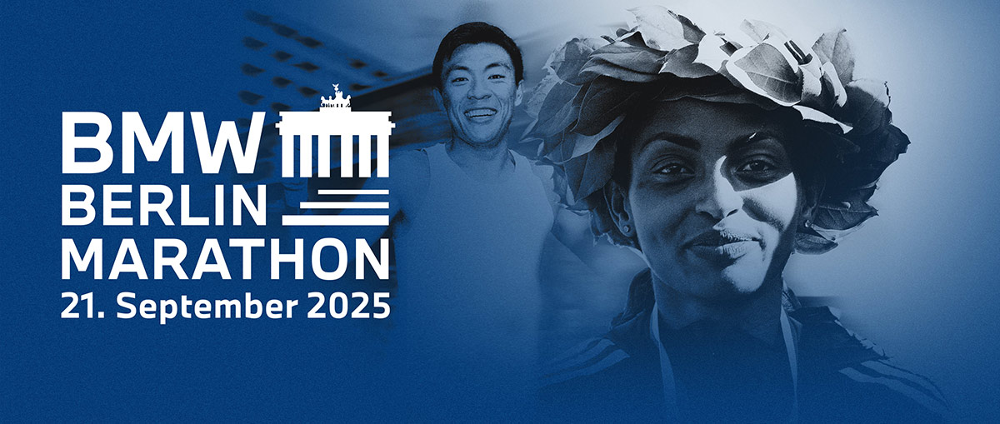
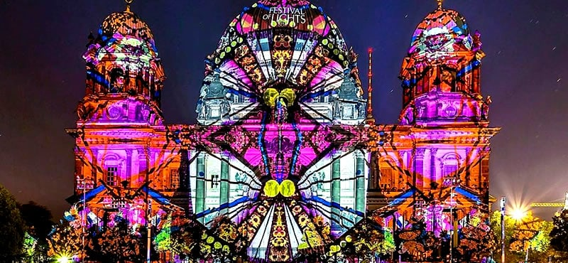
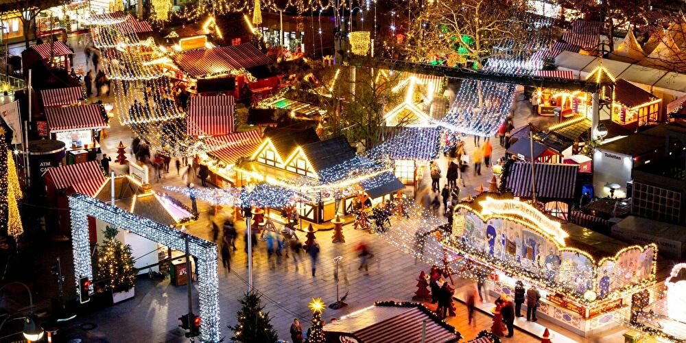

Detailed Events in Berlin
Berlin Film Festival
Location: Berlinale Palast
Date: February 13-23, 2025
The Berlin International Film Festival, also known as Berlinale, is one of the world's leading film festivals, attracting filmmakers and cinephiles globally.
Official Website Berlin Marathon
Location: Various Locations
Date: September 21, 2025
One of the most famous marathons in the world, the Berlin Marathon attracts elite runners and amateurs alike to race through Berlin’s iconic landmarks.
Official Website Festival of Lights
Location: Berlin Landmarks
Date: October 9-20, 2025
Berlin's Festival of Lights transforms the city into a glowing masterpiece, featuring illuminated landmarks, art installations, and light projections.
Official Website Christmas Markets in Berlin
Location: Various Locations
Date: December 1-24, 2025
Berlin’s Christmas markets are among the most magical in Europe, offering festive treats, handcrafted gifts, and a warm holiday spirit.
Official Website 